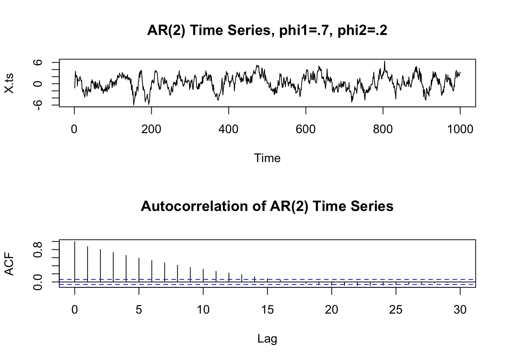

Classical decomposition model
\[ X_t = m_t + s_t + y_y \] where - \(m : \mathbb{Z} \rightarrow \mathbb{R}\) is a slowly changing function, the trend component. - \(s : \mathbb Z \rightarrow \mathbb R\) is a function with a known period \(d\), i.e., \(s_{t + d} = s_t\) for all \(t \in \mathbb Z\) and \(\sum_{j = 1}^d s_j = 0\), is called the seasonal component. - \((y_t, t \in \mathbb Z)\) is a stationary stochastic process.
Time Series Analysis
- Always plot the data first
- If there are clear sections in the data, it might be good to analyze each section separately
Best Linear Predictor
Let \((X_t, t \in \Z)\) be a time series with \(Var(X_t) < \infty\) for \(t \in \Z\) and \(X^n := (X_{t_1},\ldots, X_{t_n})\) be a collection of random variables of the time series at \(n\) different times. Then the _best linear predictor of \(X_t\) is given by \[ b_t^l(X^n) = a_0 + a_1 X_{t_n} + \cdots + a_n X_{t_1} \] where the coefficients are determined by the linear equations
- \(E(X_t - b_t^l(X^n)) = 0\)
- \(E(X_{t_j}(X_t - b_t^l(X^n))) = 0\) for all \(j = 1,\ldots,n\).
If X is stationary, with mean \(\mu\) and autocovariance function \(\gamma\), the coefficients are determined by \[ a_0 = \mu (1 - \sum_{i = 1}^n a_i) \] and \[ (\gamma(t_{n + 1 - j} - t_{n + 1 - i}))_{i,j = 1}^n (a_1,\ldots,a_n)^T = (\gamma(t - t_n),\ldots, \gamma(t - t_1))^T \]
The mean square error is:
\[ MSE(b_t^l(X^n), X_t) = E[(b_t^l(X^n) - X_t)^2] = \gamma(0) - (a_1, \ldots, a_n)(\gamma(t - t_n), \ldots, \gamma(t - t_1))^T \]
Note: when \(X^n := (X_1, \ldots, X_n)\) then the coefficients \((a_0,\ldots,a_n)\) for prediction of \(X_{n + h}\) and \[ (\gamma(i - j)_{i,j = 1}^n) (a_1,\ldots, a_n)^T = (\gamma(h), \ldots, \gamma(h + n - 1))^T \]
Example
The notation \(t_1,\ldots, t_n\) was confusing to me at first. A good example that shown how it works is if we have an \(AR(1)\) process, \[ X_t - \phi_1 X_{t - 1} = Z_t \] Assume that we observe values at \(X_1\) and \(X_3\), but are missing a value for \(X_2\). We then have \(t_1 = 1\), \(t_2 = 3\), with \(n = 2\). We want to find: \[ b_2^l(X^1,X^3) = a_0 + a_1 X_3 + a_2 X_1 \] We have that \(a_0 = 0\), since the process has mean zero. It then follows that,
\[ \begin{aligned} \begin{pmatrix} \gamma(t_{3 + 1 - 1} - t_{3 + 1 - 1}) & \gamma(t_{3 + 1 - 2} - t_{3 + 1 - 1})\\ \gamma(t_{3 + 1 - 1} - t_{3 + 1 - 2}) &\gamma(t_{3 + 1 - 1} - t_{3 + 1 - 1}) \end{pmatrix} \begin{pmatrix} a_1\\ a_2 \end{pmatrix} &= \begin{pmatrix} \gamma(2 - t_{2})\\ \gamma(2 - t_{1}) \end{pmatrix}\\ \begin{pmatrix} \gamma(0) & \gamma(3 - 1)\\ \gamma(3 - 1) &\gamma(0) \end{pmatrix} \begin{pmatrix} a_1\\ a_2 \end{pmatrix} &= \begin{pmatrix} \gamma(2 - 3)\\ \gamma(2 - 1) \end{pmatrix}\\ \begin{pmatrix} 1 & \phi_1^2\\ \phi_1^2 & 1 \end{pmatrix} \begin{pmatrix} a_1\\ a_2 \end{pmatrix} &= \begin{pmatrix} \phi_1\\ \phi_1 \end{pmatrix} \end{aligned} \]
Which leads to a solution \[ a_1 = a_2 = \frac{\phi_1}{1 + \phi_1^2} \]
ARMA(p,q)
\(\{X_t\}\) is an ARMA(p,q) process if \(\{X_t\}\) is stationary and if for every \(t\), \[ X_t - \sum_{i = 1}^p \phi_i X_{t-i} = Z_t + \sum_{j = 1}^q \theta_j Z_{t - j} \] where \(\{Z_t\} \sim WN(0, \sigma^2)\) and the polynomials \((1 - \sum_{i = 1}^p \phi_i z^i)\) and \((1 + \sum_{j = 1}^q \theta_j z^j)\) have no common factors.
Causality
An ARMA(p,q) process \(\{X_t\}\) is causal, if there exists constants \(\{\psi_t\}\) such that \[ \sum_{j = 0}^\infty | \psi_{j} | < \infty \] and \[ X_t = \sum_{j = 0}^\infty \psi_{j} Z_{t - j} \] for all \(t\). That is, if we can represent the ARMA(p,q) process \(\{X_t\}\) as a \(MA(\infty)\) process.
How to actually check? Use the equivalent condition: \[ \phi(z) = 1 - \sum_{i = 1}^p \phi_i z^i \not = 0 \quad \text{for all}~|z| \leq 1 \] That is, that \(\phi(z)\) has no roots inside (or that all root are outside the unit circle).
Finding Causal Representation
To represent our (causal) ARMA(p,q) process in the form: \[ X_t = \sum_{j = 0}^\infty \psi_j Z_{t - j} \] The sequence of \(\{\psi_j\}\) is determined by the relation \(\psi(z) = \sum_{j = 0}^\infty \psi_j z^j = \theta(z) / \phi(z)\), or equivalently: \[ \psi_j - \sum_{k = 1}^p \phi_k \psi_{j - k} = \theta_j, ~j = 0,1,\ldots \] with \(\theta_0 := 1, \theta_j := 0\) for j > q and \(\psi_j := 0\) for \(j < 0\).
Finding invertible (AR(\(\infty\))) representation
To represent our invertible ARMA(p,q) process in the form: \[ Z_t = \sum_{j = 0}^\infty \pi_j X_{t - j} \] we find \(\{\pi_j\}\) by the equations \[ \pi_j + \sum_{k = 1}^q \theta_k \pi_{j - k} = -\phi_j, ~j = 0,1,\ldots, \] where \(\phi_0 := -1,~ \phi_j := 0\) for \(j > p\), and \(\pi_j := 0\) for \(j < 0\).
Model Building for ARMA processes
- Remove trend and seasonality until you believe the dta can be modeled as a stationary time series.
- Identify the order of the ARMA process for the time series
- Either look at ACF/PACF
- or by fitting (using maximum likelihood or Hannan-Rissanen estimation) sucessively higher order ARMA(p,q) to the data and choosing p, q to minimize either the AICC or BIC.
- Estimate the final model using maximum likelihood
- Compute the residuals \(\hat{R}_t\) and check that they are consistent with the specified distribution and temporal covariance structure for \(Z_t\).
- If they are, then the model is considered adequate for the data.
Autoregressive Processes - AR(p)
\[ X_t - \sum_{j = 1}^p \phi_j X_{t - j} = Z_t \]
- AR(p) is not necessarily stationary!
AR(1) Example
AR(2)
Can simulate using the function astsa::arima.sim function \[
X_t = Z_t + 0.7 \cdot X_{t - 1} + 0.2 \cdot X_{t - 2}
\]

Moving Average Processes - MA(q)
\[ X_t = Z_t + \sum_{j = 1}^q \theta_j Z_{t - j} \] with \(Z_t \sim WN(0, \sigma^2)\). At lag greater than or equal to q, the ACF should be zero.
MA(2) example
\[ X_t = Z_t + 0.8 \cdot Z_{t - 1} + 0.2 \cdot Z_{t - 2} \]
The autocorrelation function
ARMA(p,q)
- The partial autocorrelation function PACF of an ARMA(p,q) process X can be thought of as the correlation between \(X_t\) and \(X_{t + h}\) when adjusting for the intervening observations \(X_{t + 1}, \ldots, X_{t + h - 1}\).
- Can be used to detect seasonality: If you have monthly data and you see a big spike at \(\hat{\alpha}(12)\), it is likely that you see a periodic effect corresponding to a calendar year, so you should remove the seasonality.
ACF and PACF
| Conditional Mean Model | ACF | PACF |
|---|---|---|
| AR(p) | Tails off gradually | Cuts off after p lags |
| MA(q) | Cuts off after q lags | Tails off gradually |
| ARMA(p,q) | Tails off gradually | Tails off gradually |
Source: https://se.mathworks.com/help/econ/autocorrelation-and-partial-autocorrelation.html
Innovations Algorithm
Used to compute the best linear predictor, \(b_{n + 1}^l(X^n)\) more computationally efficiently than solving a system of \(n\) linear equations. Can be applied to all time series with finite second moments. Assume we have a time series \((X_t, t \in \mathbb Z)\) with zero mean, and finite second moment \(E[X_t^2] < + \infty\) for all \(t \in \mathbb Z\) and covariance \[ Cov(X_i, X_j) = \kappa(i,j) \] We denote the best linear one-step predictors as \[ \hat{X}_n := \begin{cases} 0 & \text{for n = 1}\\ b_{n}^l(X^{n - 1}) & \text{for n > 1} \end{cases} \] and the mean squared errors as \[ v_n := MSE(\hat{X}_{n+1}, X_{n + 1}) = E[(\hat{X}_{n + 1} - X_{n + 1})^2] \]
There exists coefficients \((\theta_{ij}, 1 \leq j \leq i \leq n)\) such that the best linear predictors satisfy \[ \hat{X}_{n + 1} = \begin{cases} 0 & \text{for } n = 0\\ \sum_{j = 1}^n \theta_{nj}(X_{n + 1 - j} - \hat{X}_{n+1-j}) & \text{for } n \geq 1 \end{cases} \] We compute the coefficients \(\theta_{n1},\ldots, \theta_{nn}\) recursively from the equations \[ v_0 := \kappa(1,1) \] and \[ \theta_{n (n - k)} := v_k^{-1} \left( \kappa(n + 1, k + 1) - \sum_{j = 0}^{k - 1} \theta_{k (k - j)} \theta_{n (n - j)} v_j \right) \]
GARCH/ARCH
Conditional Maximum Likelihood
The MLEs \((\hat{\alpha}_0, \ldots, \hat{\alpha}_p, \hat{\beta}_1, \ldots, \hat{\alpha}_q, \hat{\theta}_Z)\) are obtained by maximizing the conditional likelihood function \[ L(\alpha_0, \ldots, \alpha_p, \beta_1, \ldots, \alpha_q, \theta_Z) = \prod_{t = p + 1} \frac{1}{\sigma_t} f_Z \left( \frac{x_t}{\sigma_t}\right) \] where \(f_Z\) is the density of the white noise Z and \(\theta_Z\) is any other parameter Z depends on (such as degrees of freedom if Z is t-distributed).
It \(Z \sim IIDN(0,1)\) then, \[ \begin{aligned} f_Z \left( \frac{x_t}{\sigma_t}\right) &= \frac{1}{\sqrt{2\pi}} \exp\left( - \frac{X_t^2}{2 \sigma_t^2}\right)\\ L(\alpha_0, \ldots, \alpha_p, \beta_1, \ldots, \alpha_q, \theta_Z) &= \prod_{t = p + 1}^n \frac{1}{\sigma_t} \frac{1}{\sqrt{2\pi}} \exp\left( - \frac{X_t^2}{2 \sigma_t^2}\right)\\ - \ln L(\alpha_0, \ldots, \alpha_p, \beta_1, \ldots, \alpha_q, \theta_Z) &= \sum_{t = p + 1}^n \ln{\sigma_t} + \frac{1}{2} \ln(2\pi)as + \frac{1}{2} \frac{X_t^2}{\sigma_t^2}\\ &= \frac{1}{2} \sum_{t = p + 1}^n 2 \ln{\sigma_t} + \ln(2\pi) + \frac{X_t^2}{\sigma_t^2}\\ &= \frac{1}{2} \sum_{t = p + 1}^n \ln{\sigma_t^2} + \ln(2\pi) + \frac{X_t^2}{\sigma_t^2} \end{aligned} \]
Acknowledgements
This blog post was made possible thanks to:
References
[1] C. Boettiger. knitcitations: Citations for ‘Knitr’ Markdown Files. R package version 1.0.12. 2021. URL: https://CRAN.R-project.org/package=knitcitations.
[2] H. Wickham, W. Chang, R. Flight, K. Müller, et al. sessioninfo: R Session Information. R package version 1.2.2. 2021. URL: https://CRAN.R-project.org/package=sessioninfo.
[3] Y. Xie, A. P. Hill, and A. Thomas. blogdown: Creating Websites with R Markdown. ISBN 978-0815363729. Boca Raton, Florida: Chapman and Hall/CRC, 2017. URL: https://bookdown.org/yihui/blogdown/.
Reproducibility
─ Session info ───────────────────────────────────────────────────────────────────────────────────────────────────────
setting value
version R version 4.2.1 (2022-06-23)
os macOS Catalina 10.15.7
system x86_64, darwin17.0
ui X11
language (EN)
collate en_US.UTF-8
ctype en_US.UTF-8
tz America/Los_Angeles
date 2022-12-11
pandoc 2.19.2 @ /Applications/RStudio.app/Contents/MacOS/quarto/bin/tools/ (via rmarkdown)
─ Packages ───────────────────────────────────────────────────────────────────────────────────────────────────────────
! package * version date (UTC) lib source
P assertthat 0.2.1 2019-03-21 [?] CRAN (R 4.2.0)
P backports 1.4.1 2021-12-13 [?] CRAN (R 4.2.0)
P bibtex 0.5.0 2022-09-25 [?] CRAN (R 4.2.0)
P cli 3.4.1 2022-09-23 [?] CRAN (R 4.2.0)
P colorspace 2.0-3 2022-02-21 [?] CRAN (R 4.2.0)
P DBI 1.1.3 2022-06-18 [?] CRAN (R 4.2.0)
P digest 0.6.31 2022-12-11 [?] CRAN (R 4.2.1)
P dplyr 1.0.10 2022-09-01 [?] CRAN (R 4.2.0)
P evaluate 0.18 2022-11-07 [?] CRAN (R 4.2.0)
P fansi 1.0.3 2022-03-24 [?] CRAN (R 4.2.0)
P fastmap 1.1.0 2021-01-25 [?] CRAN (R 4.2.0)
P generics 0.1.3 2022-07-05 [?] CRAN (R 4.2.0)
P ggplot2 * 3.4.0 2022-11-04 [?] CRAN (R 4.2.0)
P glue 1.6.2 2022-02-24 [?] CRAN (R 4.2.0)
P gtable 0.3.1 2022-09-01 [?] CRAN (R 4.2.0)
P htmltools 0.5.4 2022-12-07 [?] CRAN (R 4.2.0)
P htmlwidgets 1.5.4 2021-09-08 [?] CRAN (R 4.2.0)
P httr 1.4.4 2022-08-17 [?] CRAN (R 4.2.1)
P jsonlite 1.8.4 2022-12-06 [?] CRAN (R 4.2.1)
P knitcitations * 1.0.12 2021-01-10 [?] CRAN (R 4.2.0)
P knitr 1.41 2022-11-18 [?] CRAN (R 4.2.1)
P lifecycle 1.0.3 2022-10-07 [?] CRAN (R 4.2.0)
P lubridate 1.9.0 2022-11-06 [?] CRAN (R 4.2.0)
P magrittr 2.0.3 2022-03-30 [?] CRAN (R 4.2.0)
P munsell 0.5.0 2018-06-12 [?] CRAN (R 4.2.0)
P pillar 1.8.1 2022-08-19 [?] CRAN (R 4.2.0)
P pkgconfig 2.0.3 2019-09-22 [?] CRAN (R 4.2.0)
P plyr 1.8.8 2022-11-11 [?] CRAN (R 4.2.0)
P R6 2.5.1 2021-08-19 [?] CRAN (R 4.2.0)
P Rcpp 1.0.9 2022-07-08 [?] CRAN (R 4.2.0)
P RefManageR 1.4.0 2022-09-30 [?] CRAN (R 4.2.0)
renv 0.16.0 2022-09-29 [1] CRAN (R 4.2.0)
P rlang 1.0.6 2022-09-24 [?] CRAN (R 4.2.0)
P rmarkdown 2.18 2022-11-09 [?] CRAN (R 4.2.0)
P rstudioapi 0.14 2022-08-22 [?] CRAN (R 4.2.0)
P scales 1.2.1 2022-08-20 [?] CRAN (R 4.2.0)
P sessioninfo * 1.2.2 2021-12-06 [?] CRAN (R 4.2.0)
P stringi 1.7.8 2022-07-11 [?] CRAN (R 4.2.0)
P stringr 1.5.0 2022-12-02 [?] CRAN (R 4.2.0)
P tibble 3.1.8 2022-07-22 [?] CRAN (R 4.2.0)
P tidyselect 1.2.0 2022-10-10 [?] CRAN (R 4.2.0)
P timechange 0.1.1 2022-11-04 [?] CRAN (R 4.2.0)
P utf8 1.2.2 2021-07-24 [?] CRAN (R 4.2.0)
P vctrs 0.5.1 2022-11-16 [?] CRAN (R 4.2.0)
P withr 2.5.0 2022-03-03 [?] CRAN (R 4.2.0)
P xfun 0.35 2022-11-16 [?] CRAN (R 4.2.0)
P xml2 1.3.3 2021-11-30 [?] CRAN (R 4.2.0)
P yaml 2.3.6 2022-10-18 [?] CRAN (R 4.2.0)
[1] /Users/stefaneng/personal_devel/stefanengineering.comV3/renv/library/R-4.2/x86_64-apple-darwin17.0
[2] /Users/stefaneng/personal_devel/stefanengineering.comV3/renv/sandbox/R-4.2/x86_64-apple-darwin17.0/84ba8b13
P ── Loaded and on-disk path mismatch.
──────────────────────────────────────────────────────────────────────────────────────────────────────────────────────